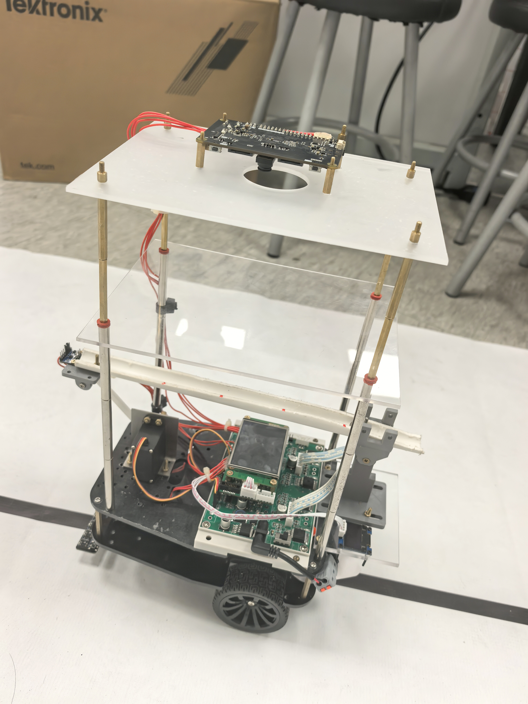

Balance Car
2026 TI Cup · Problem H
A line-following vehicle that uses a camera to track a steel ball and tilts a grooved beam to control its position.
Source code ↗ Original problem (Chinese PDF) ↗ Technical report (Chinese PDF) ↗


The challenge
Build a battery-powered vehicle that follows a black loop autonomously while keeping a steel ball near a target on a grooved beam. An onboard camera must show the ball’s motion live and record each test for replay.
- Line following and stopping
- Complete a lap within 20 seconds and stop within 2 cm of the start mark.
- Ball positioning at rest
- Move the ball from the center to +5 cm, then to −5 cm, within 5 seconds. The position error at either target must stay within 1 cm.
- Balance while driving
- Keep the ball within 1 cm of its target during the A-to-B segment or a full lap. The time limits are 8 seconds and 30 seconds, respectively.
System design
An STM32H745 controls the vehicle. An eight-channel infrared array measures line position, a CanMV K230 camera tracks the ball and streams video, and an IMU measures the beam angle. The balance controller uses the ball’s position to set a target beam angle, then adjusts the actuator to reach that angle.
The report documents simulation, host-side tests, and partial hardware validation. Balancing the ball while the vehicle drives remained an integration task.